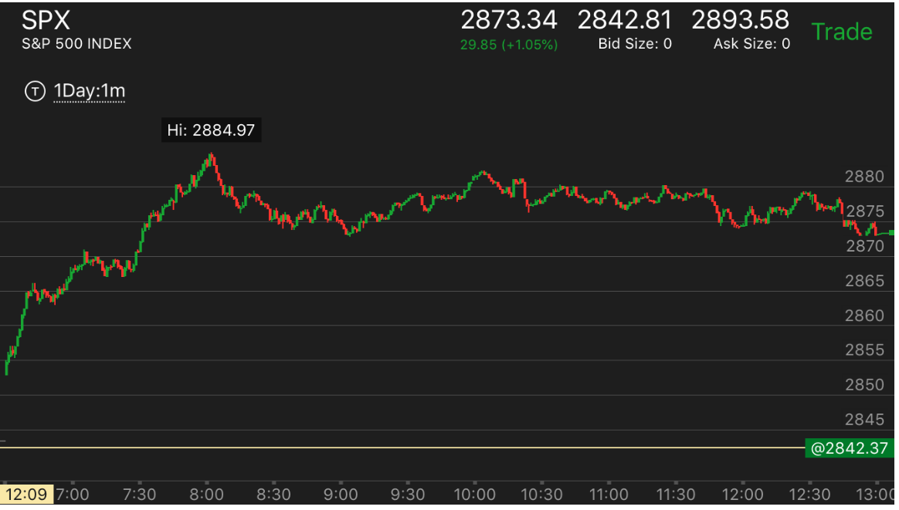
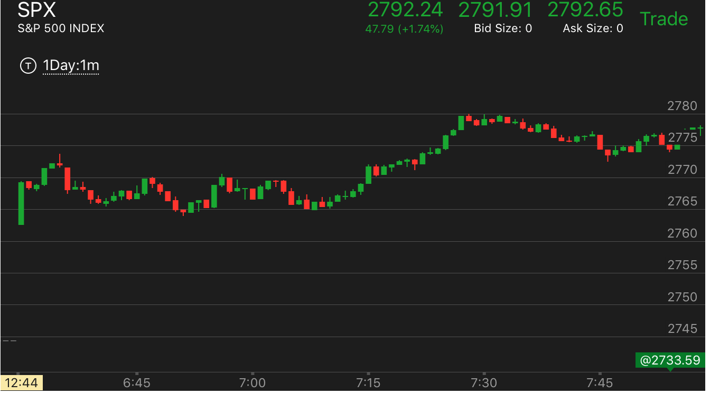
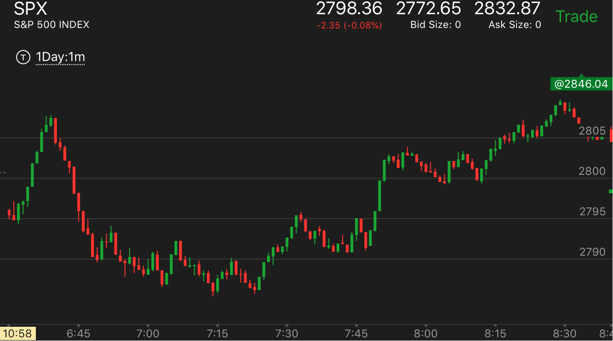
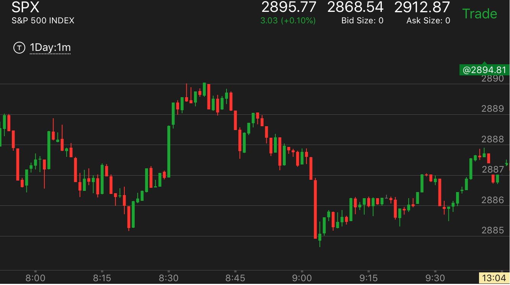
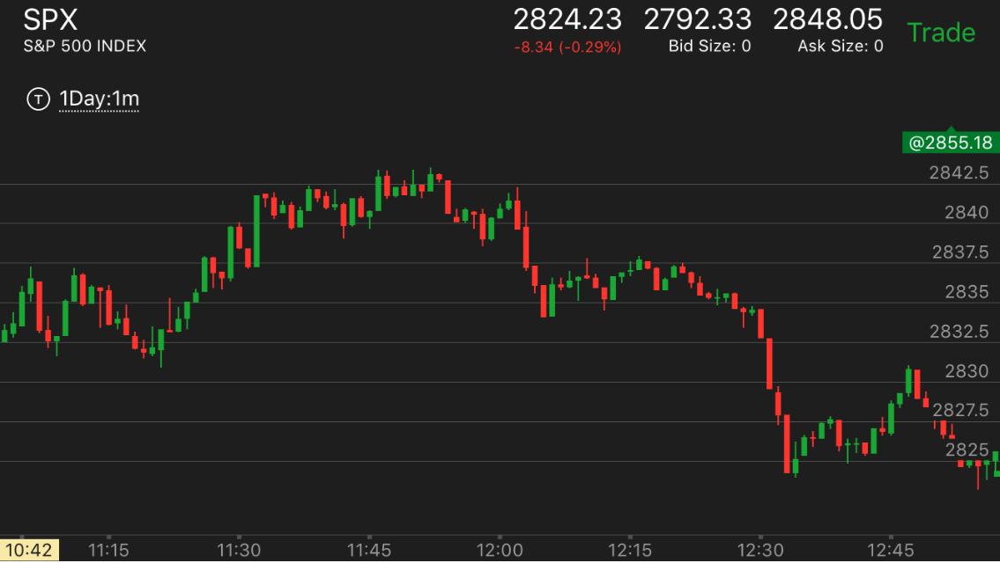
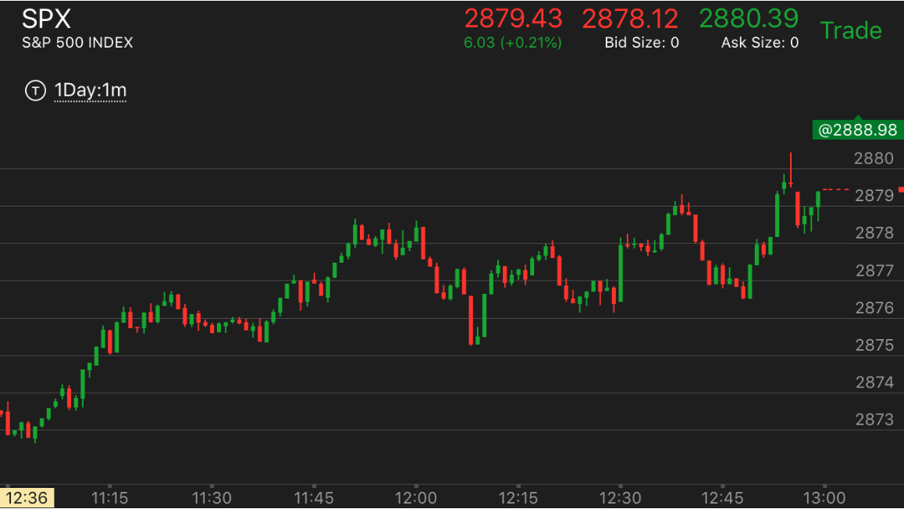

容易弄错的走势
容易弄错的走势
小的走势和大的走势矛盾，容易搞错，这时要注意高点和低点。这个不会错
小型两段走势和大跌前的预备的区别
几种大幅快速下跌的区别
开后冲高后，快速从高处下跌的两种不同的走势。
两段上涨后，没有全面反转
两段上涨后，没有全面反转
TOP
它的开始下跌速度很快，但是没有填补真空，而且一味前进，直到结束这个走势为止，
而不是回头填补真空，可以持续发展。这样也说明了，不要试图来回交易一个走势。比如一开始就很快，以为它要回头，
结果它不会调，持续前进。我就错过了机会。

图示：7：50下跌后，速度很快，这个其实也没啥。如果填补真空，还可以继续，结果它没有
填补真空，而是继续前面，直到这个走势结束在9：00出现了连续下跌的走势。所以一个走势是否持续，在于是否填补真空，即使一开始速度
很快也没关系。
开后冲高后，快速从高处下跌的两种不同的走势。
TOP
关键是开盘后，是一直上涨，还是出现了两段走势，只有两段走势，才可以比较速度。否则无法比较速度

图示：开盘后， 第一个bar很大，然后缓慢上涨，它从高点立刻下来，速度很快，然后很快就回去一下，再次下跌。
震荡很久后，大跌。这个关键在于，它的开盘是一系列的上涨，没有下跌。相当于冲高大跌走势。它的下跌也就无所谓速度了。因为开盘后，一直连续上涨。

图示：这个开盘后，第一个bar很大。但是它走平了。然后再次冲高，成了一个两段上涨走势。
它从高点快速下跌。因为有了两段走势，所以下跌的速度可以度量了。它下跌后，走平一段时间，然后6：47出现了连续下跌的见底走势。
6：50出现了第一个上涨，然后回调，然后一直就开始缓慢的上涨了。
几种大幅快速下跌的区别
TOP
- 如果从最高点立刻就很快大跌，那么这个大跌没有根基，它要么会大幅反弹，填空，要么会走平很久见到底部
- 如果从高点缓慢下跌，后面才大幅快速下跌，那么这个下跌有根基，它未必要填空
- 看它是否是第一浪，还是刚刚开盘后的setup。如果是前面的两浪结束后发生的，那么这个是第一浪，可能会有第二浪。
- 如果一个快速下跌，下跌前有冲高的样子，那么可以利用相对论来判断，它下跌停止后，就是底部了。这时下跌的相对速度
非常重要。如果没有冲高，只是单纯的快速下跌，那么这个不会反弹，可能填补真空后，继续大跌，也可能直接下跌。
未来填补真空。

图示：它的第一和第二个bar都是向下。虽然幅度很小，但是表示它就是一个跌势，然后它立刻冲高，冲高后，
大幅下跌。根据相对论。前面很小的下跌，都拉回了。那么后面很大的下跌，更应该被拉回。7：03的反弹比前面的反弹更高，而7：15的下跌更低。
表示大盘要反弹了。

图示：这个走势前面出现了两浪上涨，然后顶部走平。这样它很可能是第一浪下跌。
但是也要看它后续的走势。它在底部大幅反弹。而且反弹的时候，出现了5浪上涨走势。这样就是填补了真空。会继续大跌。
TOP
小型两段走势和大跌前的预备的区别
两者都以小的两段走势呈现。大跌的预备的幅度更加小一些。而反弹则是开始很快，
大跌预备反弹后，就会迅速大跌，跌倒低于两段的低点。而真的两段则始终高于前面两段的低点。

图示：8:42开始下跌。这时可以看到它反弹后，一直没有低于最低点。而且缓慢下跌。直到9：00开始快速下跌。
这样就是一个两段走势的结束。前面的下跌不是准备，而是两段下跌的第一段。

图示：11：50开始下跌，它下跌一个bar，走平，再次走低。其实就是一个两段走势结束了。
它很快反弹回到原位后，大幅下跌。这时这个下跌是第一浪。而且12：00开始的下跌，下跌后，低于前面两段走势的下跌。
说明并不属于它，而是新的下跌。

图示：12：00开始下跌。很快转折，出现了两段走势。它很快反弹。然后下来。
这时可以看到，它在12：20回调的低点仍然高于前面两段走势的低点。说明这个是反前面两段走势的一部分。
因为它上涨时间比较长。它的反走势一定高于前面的高点。果然它在12：40 冲高，高于前面的高点。
TOP
小的走势和大的走势矛盾，容易搞错，这时要注意第一浪的激烈程度和第二浪的激烈程度

图示：
1. 开盘后，冲高，然后下跌，在第7 分钟出现了一个两段下跌见底的走势。但是它反弹速度很快。只用了2分钟就h回到高点，然后再高点停留后，再冲高。
形成了两段上涨走势。这些走势都非常的小。但是对于数清浪很重要。
2. 6；40开始了第一浪下跌，创新低，然后反弹回了原位，再次下跌，更低，但是立刻拉回。这个显然不是第二段走势，因为它不够激烈，在底部停留时间太短。
7；11分它拉回的第一浪就很大，走平后，再次上涨，这个是典型的跌势。7：30开始下跌后，也是速度很慢，也不够激烈，而由于它前面来回震荡，积累了很多的力量。
就形成了很强的跌势。